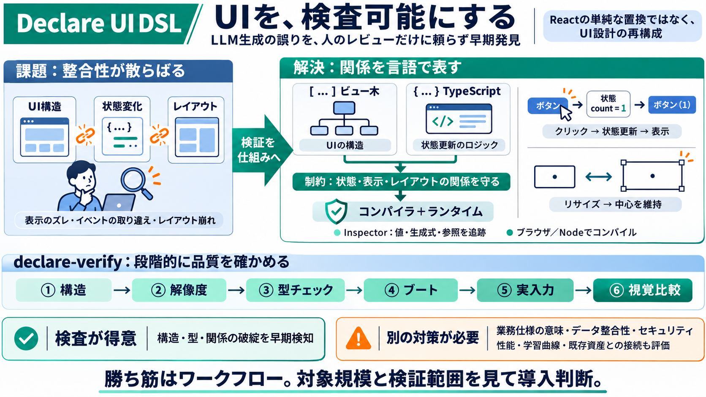

GitHub - davidtemkin/declarelang: The UI language for you and your AI · GitHub
Declare makes continuity the grain, not the garnish. Motion is a `Spring` on an attribute; layout is a reactive attribut…

Declareは「LLMがコードを書くコスト」を下げつつ、正しさを人の信頼に頼らずコンパイラと検証に寄せるためのUI用DSLです。
日本語補助：ビュー木（View Tree）＝UIの構造、State（状態）＝可逆な変化、制約（Constraints）＝関係を守るルール。
通常のWeb開発では、UI構造・状態変化・レイアウト維持がコードと実行時ロジックに分散し、整合性チェックが人に委ねられがちです。
Declareは「LLM生成は安いが、信頼は別コスト」を前提に、UIの“関係”を言語化しコンパイル時の検査へ寄せます。
Declareは1つのプログラム内に、UI構造の
「クリックで状態が更新される」「リサイズで中心に留まる」などの関係を、ランタイムが常に守る制約として言語が表します。
効果：再レンダリング／依存配列／差分計算を人が意識する負担を減らす、と説明されます。
コンパイラがブラウザ内でもNodeでも動くため、ビルド手順やルーティング設定の摩擦を下げられるとされています。
declare-verifyは「構造→解像度→型check→ブート→入力下→視覚ベースライン」の順に段階的に品質を上げる、と整理できます。
Inspectorは値の生成式や参照関係を追跡し、ライブに試せることで「DSL導入時のデバッグ困難」を緩和する狙いがあります。
READMEの文脈では「Reactのポートではなく再設計」とされ、宣言的UIの思想は近くても中核は別物（ビュー木・制約・コンパイル保証）と読めます。
言語が検査できるのは主に構造・型・整合性であり、業務仕様の意味論やセキュリティまでを自動保証するかは別問題になり得ます。
ブラウザでのコンパイルや型チェックは、規模次第で初回ロードや実行コストが効く可能性があります。定量ベンチマークや運用実績が読み取れない点は不確実性です。
Declareは「LLM生成の誤りを早期に潰す」には強く適合し得ますが、万能な正しさ保証ではないため、対象アプリ規模と検証ラダーのカバー範囲で慎重に評価すべきです。
以下は、提示されたREADME相当の内容からの整理であり、詳細な仕様・数値は追加確認が必要です。
Declare makes continuity the grain, not the garnish. Motion is a `Spring` on an attribute; layout is a reactive attribut…
2020; Wang et al., 2021; Guo et al., 2021; Ye et al., 2024). Most closely related is the work of Bi et al. (Bi et al., 2…
## Performance Considerations ### Cost Analysis LLM Compiler cost: Plan DAG: 1 LLM call Execute tools: 0 LLM call…
Agentic reliability is not just accuracy. It is pass rate (does the model produce usable output every time?), format com…
For a generation agent, code that won't compile on the first pass slows adoption more than a small accuracy gap. Write t…